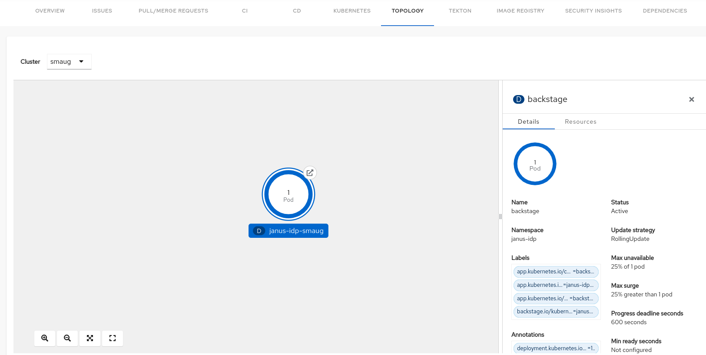

Configuring dynamic plugins
Configuring dynamic plugins in Red Hat Developer Hub
Abstract
- Preface
- 1. Install and configure Argo CD
- 2. Monitor continuous integration pipelines with Tekton
- 3. Enable the Topology plugin
- 3.1. Install the Topology plugin
- 3.2. Configure the Topology plugin
- 3.3. Manage labels and annotations for Topology plugins
- 3.3.1. Manage labels and annotations
- 3.3.2. Add entity annotations and labels for the Kubernetes plugin
- 3.3.3. Namespace annotation
- 3.3.4. Add a label selector query annotation
- 3.3.5. Display a runtime icon in the topology node
- 3.3.6. Group applications in the topology view
- 3.3.7. Node connector
- 3.3.8. Additional resources
- 3.4. Use the Topology plugin
- 4. Bulk importing in Red Hat Developer Hub
- 4.1. Repository visibility in Bulk Import
- 4.2. Enable and authorize Bulk Import capabilities in Red Hat Developer Hub
- 4.3. Import multiple GitHub repositories
- 4.4. Import multiple GitLab repositories
- 4.5. Monitor Bulk Import actions using audit logs
- 4.6. Input parameters for Bulk Import Scaffolder template
- 4.7. Set up a custom Scaffolder workflow for Bulk Import
- 4.8. Run Orchestrator workflows for bulk imports
- 4.9. Data handoff and custom workflow design
- 5. Kubernetes custom actions in Red Hat Developer Hub
- 6. Configure Red Hat Developer Hub events module
- 7. Override Core Backend Service Configuration
Preface
As a platform engineer, you can configure dynamic plugins in Red Hat Developer Hub (RHDH) to access your development infrastructure or software development tools.
Chapter 1. Install and configure Argo CD
You can use the Argo CD plugin to visualize the Continuous Delivery (CD) workflows in OpenShift GitOps.
1.1. Enable the Argo CD plugin
The Argo CD plugin provides a visual overview of the application's status, deployment details, commit message, author of the commit, container image promoted to environment and deployment history.
Procedure
Add Argo CD instance information to your
app-config.yamlconfigmap as shown in the following example:argocd: appLocatorMethods: - type: 'config' instances: - name: argoInstance1 url: https://argoInstance1.com username: ${ARGOCD_USERNAME} password: ${ARGOCD_PASSWORD} - name: argoInstance2 url: https://argoInstance2.com username: ${ARGOCD_USERNAME} password: ${ARGOCD_PASSWORD}NoteAvoid using a trailing slash in the
url, as it might cause unexpected behavior.Add the following annotation to the entity's
catalog-info.yamlfile to identify the Argo CD applications.annotations: ... # The label that Argo CD uses to fetch all the applications. The format to be used is label.key=label.value. For example, rht-gitops.com/janus-argocd=quarkus-app. argocd/app-selector: '${ARGOCD_LABEL_SELECTOR}'(Optional) Add the following annotation to the entity's
catalog-info.yamlfile to switch between Argo CD instances as shown in the following example:annotations: ... # The Argo CD instance name used in `app-config.yaml`. argocd/instance-name: '${ARGOCD_INSTANCE}'NoteIf you do not set this annotation, the Argo CD plugin defaults to the first Argo CD instance configured in
app-config.yaml.To enable the Argo CD plugin, set the
disabledproperty tofalsein yourdynamic-plugins.yamlfile as follows:ImportantArgo CD contains multiple plugin options you can choose from for your Argo CD configuration:
Community Argo CD:
-
@backstage-community/plugin-argocd -
@backstage-community/plugin-argocd-backend
-
Roadie Argo CD:
-
@roadiehq/backstage-plugin-argo-cd -
@roadiehq/backstage-plugin-argo-cd-backend
-
Community and Roadie plugins are comparable in functionality but have different features. For example, both versions feature scaffolder actions, however, their implementation is different: the Community version contains scaffolder actions by default, the Roadie version requires an additional plugin.
The recommended combination is to use
@backstage-community/plugin-argocdtogether with@backstage-community/plugin-argocd-backend.However, you can also combine
@roadiehq/backstage-plugin-argo-cdtogether with@roadiehq/backstage-plugin-argo-cd-backend.Mixing Community and Roadie plugins is not recommended.
plugins: - package: oci://ghcr.io/redhat-developer/rhdh-plugin-export-overlays/roadiehq-backstage-plugin-argo-cd-backend:<tag> disabled: false - package: oci://ghcr.io/redhat-developer/rhdh-plugin-export-overlays/backstage-community-plugin-argocd:<tag> disabled: false
where:
<tag>Enter your RHDH version of Backstage and the plugin version, in the format
bs_<backstage-version>__<plugin-version>(note the double underscore delimiter). To find these versions, complete the following steps:- Find your Backstage version in the RHDH release notes preface.
Locate the plugin version in the Dynamic Plugins Reference guide. For example, for RHDH 1.9 based on Backstage 1.45.3, use the format
bs_1.45.3__<plugin-version>.TipTo ensure environment stability, use a SHA256 digest instead of a version tag. See Determining SHA256 Digests.
1.2. Enable Argo CD Rollouts
Enable advanced deployment strategies such as blue-green and canary deployments by integrating Argo CD Rollouts with the Red Hat Developer Hub Kubernetes plugin.
The optional Argo CD Rollouts feature enhances Kubernetes by providing advanced deployment strategies, such as blue-green and canary deployments, for your applications. When integrated into the backstage Kubernetes plugin, it allows developers and operations teams to visualize and manage Argo CD Rollouts seamlessly within the Developer Hub interface.
Prerequisites
The Developer Hub Kubernetes plugin (
@backstage/plugin-kubernetes) is installed and configured.- To install and configure Kubernetes plugin in Developer Hub, see Installation and Configuration guide.
-
You have access to the Kubernetes cluster with the necessary permissions to create and manage custom resources and
ClusterRoles. -
The Kubernetes cluster has the
argoproj.iogroup resources (for example, Rollouts and Analysis Runs) installed.
Procedure
In the
app-config.yamlfile in your Developer Hub instance, add the followingcustomResourcescomponent under thekubernetesconfiguration to enable Argo Rollouts and Analysis Runs:kubernetes: ... customResources: - group: 'argoproj.io' apiVersion: 'v1alpha1' plural: 'Rollouts' - group: 'argoproj.io' apiVersion: 'v1alpha1' plural: 'analysisruns'Grant
ClusterRolepermissions for custom resources.Note-
If the Developer Hub Kubernetes plugin is already configured, the
ClusterRolepermissions for Rollouts and AnalysisRuns might already be granted. -
Use the prepared manifest to give read-only
ClusterRoleaccess to both the Kubernetes and ArgoCD plugins.
-
If the
ClusterRolepermission is not granted, use the following YAML manifest to create theClusterRole:
apiVersion: rbac.authorization.k8s.io/v1 kind: ClusterRole metadata: name: backstage-read-only rules: - apiGroups: - argoproj.io resources: - rollouts - analysisruns verbs: - get - listApply the manifest to the cluster using
kubectl:$ kubectl apply -f <your_cluster_role_file>.yaml
-
Ensure the
ServiceAccountaccessing the cluster has thisClusterRoleassigned.
-
If the Developer Hub Kubernetes plugin is already configured, the
Add annotations to
catalog-info.yamlto identify Kubernetes resources for Backstage.For identifying resources by entity ID:
annotations: ... backstage.io/kubernetes-id: <BACKSTAGE_ENTITY_NAME>
(Optional) For identifying resources by namespace:
annotations: ... backstage.io/kubernetes-namespace: <RESOURCE_NAMESPACE>
For using custom label selectors, which override resource identification by entity ID or namespace:
annotations: ... backstage.io/kubernetes-label-selector: 'app=my-app,component=front-end'
NoteEnsure you specify the labels declared in
backstage.io/kubernetes-label-selectoron your Kubernetes resources. This annotation overrides entity-based or namespace-based identification annotations, such asbackstage.io/kubernetes-idandbackstage.io/kubernetes-namespace.
Add label to Kubernetes resources to enable Developer Hub to find the appropriate Kubernetes resources.
Developer Hub Kubernetes plugin label: Add this label to map resources to specific Developer Hub entities.
labels: ... backstage.io/kubernetes-id: <BACKSTAGE_ENTITY_NAME>
GitOps application mapping: Add this label to map Argo CD Rollouts to a specific GitOps application
labels: ... app.kubernetes.io/instance: <GITOPS_APPLICATION_NAME>
NoteIf using the label selector annotation (
backstage.io/kubernetes-label-selector), ensure the specified labels are present on the resources. The label selector will override other annotations such askubernetes-idorkubernetes-namespace.
Verification
- Push the updated configuration to your GitOps repository to trigger a rollout.
- Open Red Hat Developer Hub interface and navigate to the entity you configured.
- Select the CD tab and then select the GitOps application. The side panel opens.
In the Resources table of the side panel, verify that the following resources are displayed:
- Rollouts
- Analysis Runs (optional)
Expand a rollout resource and review the following details:
- The Revisions row displays traffic distribution details for different rollout versions.
- The Analysis Runs row displays the status of analysis tasks that evaluate rollout success.
1.3. Use the Argo CD plugin
You can use the Argo CD plugin to visualize the Continuous Delivery (CD) workflows in OpenShift GitOps. This plugin provides a visual overview of the application’s status, deployment details, commit message, author of the commit, container image promoted to environment and deployment history.
Prerequisites
- You have link:enabled the Argo CD plugin in RHDH.
Procedure
- Select the Catalog tab and choose the component that you want to use.
Select the CD tab to view insights into deployments managed by Argo CD.

Select an appropriate card to view the deployment details (for example, commit message, author name, and deployment history).

-
Click the link icon (
 ) to open the deployment details in Argo CD.
) to open the deployment details in Argo CD.
-
Click the link icon (
Select the Overview tab and navigate to the Deployment summary section to review the summary of your application’s deployment across namespaces. Additionally, select an appropriate Argo CD app to open the deployment details in Argo CD, or select a commit ID from the Revision column to review the changes in GitLab or GitHub.

Chapter 2. Monitor continuous integration pipelines with Tekton
The Tekton plugin enables you to monitor CI/CD pipeline results across your Kubernetes or OpenShift clusters. It provides a high-level overview of all associated tasks, allowing you to track the real-time status of your application pipelines.
Prerequisites
-
You have installed and configured the
@backstage/plugin-kubernetesand@backstage/plugin-kubernetes-backenddynamic plugins. -
You have configured the Kubernetes plugin to connect to the cluster using a
ServiceAccount. The
ClusterRolemust be granted for custom resources (PipelineRuns and TaskRuns) to theServiceAccountaccessing the cluster.NoteIf you have the RHDH Kubernetes plugin configured, then the
ClusterRoleis already granted.-
To view the pod logs, you have granted permissions for
pods/log. You can use the following code to grant the
ClusterRolefor custom resources and pod logs:kubernetes: ... customResources: - group: 'tekton.dev' apiVersion: 'v1' plural: 'pipelineruns' - group: 'tekton.dev' apiVersion: 'v1' ... apiVersion: rbac.authorization.k8s.io/v1 kind: ClusterRole metadata: name: backstage-read-only rules: - apiGroups: - "" resources: - pods/log verbs: - get - list - watch ... - apiGroups: - tekton.dev resources: - pipelineruns - taskruns verbs: - get - listYou can use the prepared manifest for a read-only
ClusterRole, which provides access for both Kubernetes plugin and Tekton plugin.Add the following annotation to the entity’s
catalog-info.yamlfile to identify whether an entity contains the Kubernetes resources:annotations: ... backstage.io/kubernetes-id: <BACKSTAGE_ENTITY_NAME>
You can also add the
backstage.io/kubernetes-namespaceannotation to identify the Kubernetes resources using the defined namespace.annotations: ... backstage.io/kubernetes-namespace: <RESOURCE_NS>
Add the following annotation to the
catalog-info.yamlfile of the entity to enable the Tekton related features in RHDH. The value of the annotation identifies the name of the RHDH entity:annotations: ... janus-idp.io/tekton : <BACKSTAGE_ENTITY_NAME>
Add a custom label selector, which RHDH uses to find the Kubernetes resources. The label selector takes precedence over the ID annotations.
annotations: ... backstage.io/kubernetes-label-selector: 'app=my-app,component=front-end'
Add the following label to the resources so that the Kubernetes plugin gets the Kubernetes resources from the requested entity:
labels: ... backstage.io/kubernetes-id: <BACKSTAGE_ENTITY_NAME>
NoteWhen you use the label selector, the mentioned labels must be present on the resource.
Procedure
To enable the Tekton plugin, set the
disabledproperty tofalsein yourdynamic-plugins.yamlfile as follows:plugins: - package: oci://ghcr.io/redhat-developer/rhdh-plugin-export-overlays/backstage-community-plugin-tekton:<tag> disabled: falsewhere:
<tag>Enter your RHDH version of Backstage and the plugin version, in the format
bs_<backstage-version>__<plugin-version>(note the double underscore delimiter). To find these versions, complete the following steps:- Find your Backstage version in the RHDH release notes preface.
Locate the plugin version in the Dynamic Plugins Reference guide. For example, for RHDH 1.9 based on Backstage 1.45.3, use the format
bs_1.45.3__<plugin-version>.TipTo ensure environment stability, use a SHA256 digest instead of a version tag. See Determining SHA256 Digests.
2.1. Use the Tekton plugin
You can use the Tekton plugin to visualize the results of CI/CD pipeline runs on your Kubernetes or OpenShift clusters. The plugin allows users to visually see high level status of all associated tasks in the pipeline for their applications.
You can use the Tekton front-end plugin to view PipelineRun resources.
Prerequisites
- You have installed the Red Hat Developer Hub (RHDH).
- You have installed the Tekton plugin. For the installation process, see Installing and viewing plugins in Red Hat Developer Hub.
Procedure
- Open your RHDH application and select a component from the Catalog page.
Go to the CI tab.
The CI tab displays the list of PipelineRun resources associated with a Kubernetes cluster. The list contains pipeline run details, such as NAME, VULNERABILITIES, STATUS, TASK STATUS, STARTED, and DURATION.

Click the expand row button besides PipelineRun name in the list to view the PipelineRun visualization. The pipeline run resource includes tasks to complete. When you hover the mouse pointer on a task card, you can view the steps to complete that particular task.

Chapter 3. Enable the Topology plugin
Install and configure the Topology plugin to visualize Kubernetes workloads and manage labels and annotations.
3.1. Install the Topology plugin
Visualize Kubernetes workloads like Deployments, Pods, and Virtual Machines by enabling the Topology plugin.
The Topology plugin enables you to visualize the workloads such as Deployment, Job, Daemonset, Statefulset, CronJob, Pods and Virtual Machines powering any service on your Kubernetes cluster.
Prerequisites
- You have installed and configured the @backstage/plugin-kubernetes-backend dynamic plugins.
- You have configured the Kubernetes plugin to connect to the cluster using a ServiceAccount.
The
ClusterRolemust be granted to ServiceAccount accessing the cluster.NoteIf you have the Developer Hub Kubernetes plugin configured, then the
ClusterRoleis already granted.
Procedure
The Topology plugin is pre-loaded in Developer Hub with basic configuration properties. To enable it, set the disabled property to false as follows:
plugins: - package: oci://ghcr.io/redhat-developer/rhdh-plugin-export-overlays/backstage-community-plugin-topology:__<tag>__ disabled: falsewhere:
<tag>Enter your RHDH version of Backstage and the plugin version, in the format
bs_<backstage-version>__<plugin-version>(note the double underscore delimiter). To find these versions, complete the following steps:- Find your Backstage version in the RHDH release notes preface.
Locate the plugin version in the Dynamic Plugins Reference guide. For example, for RHDH 1.9 based on Backstage 1.45.3, use the format
bs_1.45.3__<plugin-version>.TipTo ensure environment stability, use a SHA256 digest instead of a version tag. See Determining SHA256 Digests.
3.2. Configure the Topology plugin
Configure the Topology plugin to view OpenShift routes, pod logs, Tekton PipelineRuns, and virtual machines.
3.2.1. Configure the plugin
Grant read access to routes resource in ClusterRole to view OpenShift routes in the Topology plugin.
Procedure
To view OpenShift routes, grant read access to the
routesresource in theClusterRole:apiVersion: rbac.authorization.k8s.io/v1 kind: ClusterRole metadata: name: backstage-read-only rules: ... - apiGroups: - route.openshift.io resources: - routes verbs: - get - listAlso add the following in
kubernetes.customResourcesproperty in yourapp-config.yamlfile:kubernetes: ... customResources: - group: 'route.openshift.io' apiVersion: 'v1' plural: 'routes'
3.2.2. View pod logs
Grant ClusterRole permissions to pods and pods/log resources to view pod logs in the Topology plugin.
Procedure
To view pod logs, you must grant the following permission to the
ClusterRole:apiVersion: rbac.authorization.k8s.io/v1 kind: ClusterRole metadata: name: backstage-read-only rules: ... - apiGroups: - '' resources: - pods - pods/log verbs: - get - list - watch
3.2.3. View Tekton PipelineRuns
Grant ClusterRole access to Tekton resources to view PipelineRuns status in the Topology plugin.
Procedure
To view the Tekton
PipelineRuns, grant read access to thepipelines,pipelineruns, andtaskrunsresources in theClusterRole:... apiVersion: rbac.authorization.k8s.io/v1 kind: ClusterRole metadata: name: backstage-read-only rules: ... - apiGroups: - tekton.dev resources: - pipelines - pipelineruns - taskruns verbs: - get - listTo view the Tekton
PipelineRunslist in the side panel and the latestPipelineRunsstatus in the Topology node decorator, add the following code to thekubernetes.customResourcesproperty in yourapp-config.yamlfile:kubernetes: ... customResources: - group: 'tekton.dev' apiVersion: 'v1' plural: 'pipelines' - group: 'tekton.dev' apiVersion: 'v1' plural: 'pipelineruns' - group: 'tekton.dev' apiVersion: 'v1' plural: 'taskruns'
3.2.4. View virtual machines
Grant ClusterRole access to VirtualMachines resources to view virtual machine nodes in the Topology plugin.
Prerequisites
- The OpenShift Virtualization operator is installed and configured on a Kubernetes cluster.
Procedure
Grant read access to the
VirtualMachinesresource in theClusterRole:... apiVersion: rbac.authorization.k8s.io/v1 kind: ClusterRole metadata: name: backstage-read-only rules: ... - apiGroups: - kubevirt.io resources: - virtualmachines - virtualmachineinstances verbs: - get - listTo view the virtual machine nodes on the topology plugin, add the following code to the
kubernetes.customResourcesproperty in theapp-config.yamlfile:kubernetes: ... customResources: - group: 'kubevirt.io' apiVersion: 'v1' plural: 'virtualmachines' - group: 'kubevirt.io' apiVersion: 'v1' plural: 'virtualmachineinstances'
3.2.5. Enable the source code editor
Enable the source code editor to allow developers to open source code directly from RHDH.
Procedure
Grant read access to the CheClusters resource in the
ClusterRole:... apiVersion: rbac.authorization.k8s.io/v1 kind: ClusterRole metadata: name: backstage-read-only rules: ... - apiGroups: - org.eclipse.che resources: - checlusters verbs: - get - listAdd the following configuration to the
kubernetes.customResourcesproperty in yourapp-config.yamlfile:kubernetes: ... customResources: - group: 'org.eclipse.che' apiVersion: 'v2' plural: 'checlusters'
3.3. Manage labels and annotations for Topology plugins
Configure labels and annotations to customize Kubernetes resource identification and visualization in the Topology plugin.
3.3.1. Manage labels and annotations
Add annotations to workload resources to enable navigation to the Git repository of the associated application using the source code editor.
Procedure
Add the following annotations to workload resources, such as Deployments, to navigate to the Git repository of the associated application using the source code editor:
annotations: app.openshift.io/vcs-uri: <GIT_REPO_URL>
Optional: Add the following annotation to navigate to a specific branch:
annotations: app.openshift.io/vcs-ref: <GIT_REPO_BRANCH>
Optional: Add the
app.openshift.io/edit-linkannotation with the edit URL that you want to access using the decorator.NoteIf Red Hat OpenShift Dev Spaces is installed and configured and Git URL annotations are also added to the workload YAML file, then clicking on the edit code decorator redirects you to the Red Hat OpenShift Dev Spaces instance.
NoteWhen you deploy your application using the OCP Git import flows, you do not need to add the labels as import flows do that. Otherwise, you need to add the labels manually to the workload YAML file.
3.3.2. Add entity annotations and labels for the Kubernetes plugin
Add annotations and labels to enable RHDH to detect that an entity has Kubernetes components.
Procedure
Add the following annotation to the
catalog-info.yamlfile of the entity:annotations: backstage.io/kubernetes-id: <BACKSTAGE_ENTITY_NAME>
Add the following label to the resources so that the Kubernetes plugin gets the Kubernetes resources from the requested entity:
labels: backstage.io/kubernetes-id: <BACKSTAGE_ENTITY_NAME>
NoteWhen using the label selector, the mentioned labels must be present on the resource.
3.3.3. Namespace annotation
Identify Kubernetes resources by namespace using the backstage.io/kubernetes-namespace annotation.
Procedure
To identify the Kubernetes resources using the defined namespace, add the
backstage.io/kubernetes-namespaceannotation:annotations: backstage.io/kubernetes-namespace: <RESOURCE_NS>
The Red Hat OpenShift Dev Spaces instance is not accessible using the source code editor if the
backstage.io/kubernetes-namespaceannotation is added to thecatalog-info.yamlfile.To retrieve the instance URL, you require the CheCluster custom resource (CR). As the CheCluster CR is created in the openshift-devspaces namespace, the instance URL is not retrieved if the namespace annotation value is not openshift-devspaces.
3.3.4. Add a label selector query annotation
Add a custom label selector annotation so that RHDH uses your custom labels to find Kubernetes resources.
Procedure
Add the
backstage.io/kubernetes-label-selectorannotation to thecatalog-info.yamlfile of the entity. The label selector takes precedence over the ID annotations:annotations: backstage.io/kubernetes-label-selector: 'app=my-app,component=front-end'
Optional: If you have many entities while Red Hat Dev Spaces is configured and want multmanyities to support the edit code decorator that redirects to the Red Hat Dev Spaces instance, add the
backstage.io/kubernetes-label-selectorannotation to thecatalog-info.yamlfile for each entity:annotations: backstage.io/kubernetes-label-selector: 'component in (<BACKSTAGE_ENTITY_NAME>,che)'
If you are using the previous label selector, add the following labels to your resources so that the Kubernetes plugin gets the Kubernetes resources from the requested entity:
labels: component: che # add this label to your che cluster instance labels: component: <BACKSTAGE_ENTITY_NAME> # add this label to the other resources associated with your entity
You can also write your own custom query for the label selector with unique labels to differentiate your entities. However, you need to ensure that you add those labels to the resources associated with your entities including your
CheClusterinstance.
3.3.5. Display a runtime icon in the topology node
Add a label to workload resources to display a runtime icon in the topology nodes.
Procedure
Add the following label to workload resources, such as Deployments:
labels: app.openshift.io/runtime: <RUNTIME_NAME>
Alternatively, you can include the following label to display the runtime icon:
labels: app.kubernetes.io/name: <RUNTIME_NAME>
Supported values of
<RUNTIME_NAME>includedjango,dotnet,drupal,go-gopher,golang,grails,jboss,jruby,js,nginx,nodejs,openjdk,perl,phalcon,php,python,quarkus,rails,redis,rh-spring-boot,rust,java,rh-openjdk,ruby,spring, andspring-boot. Other values result in icons not being rendered for the node.
3.3.6. Group applications in the topology view
Add a label to workload resources to display them in a visual group in the topology view.
Procedure
Add the following label to workload resources, such as deployments or pods, to display them in a visual group:
labels: app.kubernetes.io/part-of: <GROUP_NAME>
3.3.7. Node connector
Display visual connectors between workload resources like deployments and pods using annotations.
Procedure
To display the workload resources such as deployments or pods with a visual connector, add the following annotation:
annotations: app.openshift.io/connects-to: '[{"apiVersion": <RESOURCE_APIVERSION>,"kind": <RESOURCE_KIND>,"name": <RESOURCE_NAME>}]'
3.3.8. Additional resources
3.4. Use the Topology plugin
Topology is a front-end plugin that enables you to view the workloads as nodes that power any service on the Kubernetes cluster.
3.4.1. Enable users to use the Topology plugin
The Topology plugin is defining additional permissions. When Authorization in Red Hat Developer Hub is enabled, to enable users to use the Topology plugin, grant them:
-
The
kubernetes.clusters.readandkubernetes.resources.read,readpermissions to view the Topology panel. -
The
kubernetes.proxyusepermission to view the pod logs. -
The
catalog-entityreadpermission to view the Red Hat Developer Hub software catalog items.
Prerequisites
Procedure
Add the following permission policies to your
rbac-policy.csvfile to create atopology-viewerrole that has access to the Topology plugin features, and add the role to the users requiring this authorization:g, user:default/<YOUR_USERNAME>, role:default/topology-viewer p, role:default/topology-viewer, kubernetes.clusters.read, read, allow p, role:default/topology-viewer, kubernetes.resources.read, read, allow p, role:default/topology-viewer, kubernetes.proxy, use, allow p, role:default/topology-viewer, catalog-entity, read, allow
kubernetes.clusters.readandkubernetes.resources.read, read, allow- Grants the user the ability to see the Topology panel.
kubernetes.proxy, use, allow- Grants the user the ability to view the pod logs.
catalog-entity, read, allow- Grants the user the ability to see the catalog item.
3.4.2. Use the Topology plugin
You can use the Topology plugin to view the workloads such as deployments or pods as nodes on the Kubernetes cluster.
Prerequisites
- Your Red Hat Developer Hub instance is installed and running.
- You have installed the Topology plugin.
- You have enabled the users to use the Topology plugin.
Procedure
- Open your RHDH application and select a component from the Catalog page.
Go to the TOPOLOGY tab and you can view the workloads such as deployments or pods as nodes.

Select a node and a pop-up appears on the right side that contains two tabs: Details and Resources.
The Details and Resources tabs contain the associated information and resources for the node.

Click the Open URL button on the top of a node.

Click the Open URL button to access the associated Ingresses and run your application in a new tab.
Chapter 4. Bulk importing in Red Hat Developer Hub
Automate onboarding of GitHub repositories and GitLab projects to Red Hat Developer Hub catalog, and monitor import status by using bulk import capabilities.
These features are for Technology Preview only. Technology Preview features are not supported with Red Hat production service level agreements (SLAs), might not be functionally complete, and Red Hat does not recommend using them for production. These features provide early access to upcoming product features, enabling customers to test functionality and provide feedback during the development process.
For more information on Red Hat Technology Preview features, see Technology Preview Features Scope.
4.1. Repository visibility in Bulk Import
View and bulk-import only the repositories you have permission to access and have not yet added to your catalog.
4.1.1. User-scoped repository access
When you use Bulk Import, Red Hat Developer Hub retrieves the list of available repositories using your authenticated user credentials through OAuth. Repository and organization listing API calls use your OAuth token for each configured source code management (SCM) host, ensuring that results match your personal access permissions rather than server-wide integration credentials.
This approach provides several benefits:
- User-scoped access
- You see only repositories you can access in GitHub or GitLab, matching your experience in those platforms.
- Enhanced security
- Import operations use your personal access token, maintaining audit trails tied to your user account.
- Permission alignment
- Repository visibility respects your organizational access policies and role-based permissions.
This differs from catalog discovery providers, which use service account credentials to automatically discover and import repositories containing catalog-info.yaml files across an entire organization.
4.1.2. Technical implementation
Bulk Import requires user authentication for all repository and organization listing operations. The following API endpoints require a valid OAuth token:
-
GET /repositories- List all accessible repositories -
GET /organizations/{org}/repositories- List repositories in a specific organization
These endpoints use the X-SCM-Tokens header to pass user OAuth tokens for GitHub and GitLab hosts. There is no fallback to server-wide integration credentials (GitHub App, PAT, or GitLab token) for these listing operations. Requests without valid user OAuth tokens are rejected with HTTP 401 Unauthorized.
Deployments that previously relied on integration-only listing must configure SCM authentication providers for user authentication. See the Bulk Import plugin documentation for configuration details.
4.1.3. Automatic filtering of imported repositories
The Bulk Import interface automatically excludes repositories that are already present in your Developer Hub catalog, showing only repositories that have not yet been imported. This filtering helps you:
- Avoid duplicate catalog entries.
- Focus on new repositories that need onboarding.
- Identify which repositories remain to be imported from your Git provider.
If a repository is removed from the catalog, it will reappear in the Bulk Import repository list and can be imported again.
4.1.4. Prerequisites for repository visibility
User authentication with OAuth is a mandatory requirement for the Bulk Import feature. To view and import repositories through Bulk Import, you must:
Configure GitHub or GitLab authentication using one of the following approaches:
- As your primary authentication provider for Developer Hub.
- As an auxiliary authentication provider if you use another primary provider, for example, OIDC or Red Hat build of Keycloak.
- Configure SCM authentication providers with OAuth support for your Git hosts
-
Have the
bulk.importpermission configured in RBAC policies. - Maintain an active OAuth session with your Git provider.
Repository and organization listing operations require user OAuth tokens. There is no fallback to server-wide integration credentials. Deployments without user authentication configured will receive HTTP 401 errors when accessing Bulk Import.
4.1.5. Troubleshooting repository visibility
If you cannot see expected repositories in the Bulk Import interface, verify the following:
- User access
- Your user account has access to those repositories in GitHub or GitLab
- Catalog status
- The repositories are not already imported into the Developer Hub catalog
- Session validity
- Your Developer Hub OAuth session has not expired
- Authentication configuration
- GitHub or GitLab authentication provider is correctly configured
- ScmAuthApi registration
-
The
ScmAuthApiis properly registered for your SCM hosts
If you receive HTTP 401 Unauthorized errors when accessing the Bulk Import page, this indicates that user OAuth tokens are not available. Verify that:
- You have authenticated to Developer Hub using GitHub or GitLab as your authentication provider
- Your authentication provider includes OAuth scopes required for repository access
- The SCM authentication provider is configured and registered in your Developer Hub deployment
4.2. Enable and authorize Bulk Import capabilities in Red Hat Developer Hub
Enable Bulk Import plugins and configure RBAC permissions to allow users to import multiple GitHub repositories and GitLab projects into the catalog.
Prerequisites
- You have configured user authentication with GitHub or GitLab as your authentication provider. This is a mandatory requirement for Bulk Import, as repository listings use user OAuth tokens.
- You have configured the GitHub or GitLab integration.
- For GitHub only: You have enabled GitHub repository discovery.
Bulk Import requires user OAuth tokens for all repository and organization listing operations. Deployments without user authentication configured will receive HTTP 401 Unauthorized errors when accessing the Bulk Import feature.
Procedure
The Bulk Import plugins are installed but disabled by default. To enable the
./dynamic-plugins/dist/red-hat-developer-hub-backstage-plugin-bulk-import-backend-dynamicand./dynamic-plugins/dist/red-hat-developer-hub-backstage-plugin-bulk-importplugins, edit yourdynamic-plugins.yamlwith the following content:plugins: - package: ./dynamic-plugins/dist/red-hat-developer-hub-backstage-plugin-bulk-import-backend-dynamic disabled: false - package: ./dynamic-plugins/dist/red-hat-developer-hub-backstage-plugin-bulk-import disabled: falseSee Installing and viewing plugins in Red Hat Developer Hub.
Configure the required
bulk.importRBAC permission for the users who are not administrators as shown in the following code:rbac-policy.csvfragmentp, role:default/bulk-import, bulk.import, use, allow g, user:default/<your_user>, role:default/bulk-importNote that only Developer Hub administrators or users with the
bulk.importpermission can use the Bulk Import feature. See Permission policies in Red Hat Developer Hub.
Verification
- The sidebar displays a Bulk Import option.
- The Bulk Import page shows a list of added GitHub repositories and GitLab projects.
4.3. Import multiple GitHub repositories
Select and import multiple GitHub repositories that you can access into the Red Hat Developer Hub catalog, automatically creating pull requests with required catalog-info.yaml files.
Prerequisites
The Bulk Import feature displays only repositories that your GitHub user account can access and that are not already imported into the Developer Hub catalog. Repository visibility is determined by your GitHub permissions, not the Developer Hub GitHub App configuration.
Procedure
- Click Bulk Import in the Developer Hub left sidebar.
If your RHDH instance has multiple source control tools configured, select GitHub from the Source control tool list.
The interface displays GitHub repositories that your authenticated user account can access, excluding repositories already present in the catalog.
Select the repositories to import, and click Add.
Developer Hub creates a pull request in each selected repository to add the required
catalog-info.yamlfile using your GitHub credentials.- For each repository to import, click PR to review and merge the changes in GitHub.
Verification
- Click Bulk Import in the Developer Hub left sidebar.
- Verify that each imported GitHub repository in the Selected repositories list has the status Waiting for approval or Imported.
For each Waiting for approval repository, click the pull request link to review and merge the
catalog-info.yamlfile in the corresponding repository.The pull request is created using your GitHub user account, ensuring proper attribution in the repository history.
4.4. Import multiple GitLab repositories
Select and import multiple GitLab projects that you can access into the Red Hat Developer Hub catalog, automatically creating merge requests with required catalog-info.yaml files.
These features are for Technology Preview only. Technology Preview features are not supported with Red Hat production service level agreements (SLAs), might not be functionally complete, and Red Hat does not recommend using them for production. These features provide early access to upcoming product features, enabling customers to test functionality and provide feedback during the development process.
For more information on Red Hat Technology Preview features, see Technology Preview Features Scope.
Prerequisites
- You have enabled the Bulk Import feature and configured access permissions.
- You have authenticated to Developer Hub using GitLab as your authentication provider.
- You have set up a GitLab personal access token (PAT).
You configured the GitLab integration by adding the following section to your RHDH
app-config.yamlfile:integrations: gitlab: - host: ${GITLAB_HOST} token: ${GITLAB_TOKEN}You enabled the GitLab catalog provider plugin in your
dynamic-plugins.yamlfile to import GitLab users and groups:plugins: - package: './dynamic-plugins/dist/backstage-plugin-catalog-backend-module-gitlab-org-dynamic' disabled: false
The Bulk Import feature displays only projects that your GitLab user account can access and that are not already imported into the Developer Hub catalog. Project visibility is determined by your GitLab permissions, not the Developer Hub GitLab integration token configuration.
Procedure
- In the Developer Hub left sidebar, click Bulk Import.
If your RHDH instance has multiple source control tools configured, select GitLab from the Source control tool list.
The interface displays GitLab projects that your authenticated user account can access, excluding projects already present in the catalog.
Select the projects to import, and click Add.
Developer Hub creates a merge request in each selected project to add the required
catalog-info.yamlfile using your GitLab credentials.- For each project to import, click MR to review and merge the changes in GitLab.
Verification
- Click Bulk Import in the Developer Hub left sidebar.
- Verify that each imported GitLab project in the Selected projects list has the status Waiting for approval or Imported.
For projects with the Waiting for approval status, click the merge request link to review and add the
catalog-info.yamlfile to the project repository.The merge request is created using your GitLab user account, ensuring proper attribution in the project history.
4.5. Monitor Bulk Import actions using audit logs
Review Bulk Import backend plugin audit log events to monitor repository import operations, track API requests, and troubleshoot import issues.
Procedure
- Access your Developer Hub backend logs where audit log events are recorded.
Review the following Bulk Import audit log events to monitor repository operations:
BulkImportUnknownEndpoint- Tracks requests to unknown endpoints.
BulkImportPing-
Tracks
GETrequests to the/pingendpoint, which allows us to make sure the bulk import backend is up and running. BulkImportFindAllOrganizations-
Tracks
GETrequests to the/organizationsendpoint, which returns the list of organizations accessible from all configured GitHub Integrations. BulkImportFindRepositoriesByOrganization-
Tracks
GETrequests to the/organizations/:orgName/repositoriesendpoint, which returns the list of repositories for the specified organization (accessible from any of the configured GitHub Integrations). BulkImportFindAllRepositories-
Tracks GET requests to the
/repositoriesendpoint, which returns the list of repositories accessible from all configured GitHub Integrations. BulkImportFindAllImports-
Tracks
GETrequests to the/importsendpoint, which returns the list of existing import jobs along with their statuses. BulkImportCreateImportJobs-
Tracks
POSTrequests to the/importsendpoint, which allows to submit requests to bulk-import one or many repositories into the Developer Hub catalog, by eventually creating import pull requests in the target repositories. BulkImportFindImportStatusByRepo-
Tracks
GETrequests to the/import/by-repoendpoint, which fetches details about the import job for the specified repository. BulkImportDeleteImportByRepoTracks
DELETErequests to the/import/by-repoendpoint, which deletes any existing import job for the specified repository, by closing any open import pull request that could have been created.Example audit log output:
{ "actor": { "actorId": "user:default/myuser", "hostname": "localhost", "ip": "::1", "userAgent": "Mozilla/5.0 (X11; Linux x86_64) AppleWebKit/537.36 (KHTML, like Gecko) Chrome/128.0.0.0 Safari/537.36" }, "eventName": "BulkImportFindAllOrganizations", "isAuditLog": true, "level": "info", "message": "'get /organizations' endpoint hit by user:default/myuser", "meta": {}, "plugin": "bulk-import", "request": { "body": {}, "method": "GET", "params": {}, "query": { "pagePerIntegration": "1", "sizePerIntegration": "5" }, "url": "/api/bulk-import/organizations?pagePerIntegration=1&sizePerIntegration=5" }, "response": { "status": 200 }, "service": "backstage", "stage": "completion", "status": "succeeded", "timestamp": "2024-08-26 16:41:02" }
4.6. Input parameters for Bulk Import Scaffolder template
Define Scaffolder template parameters such as repository URL, name, organization, and branch details to customize bulk import automation workflows for your repositories.
As an administrator, you can use the Bulk Import plugin to run a Scaffolder template task with specified parameters, which you must define within the template.
The Bulk Import plugin analyzes Git repository information and provides the following parameters for the Scaffolder template task:
repoUrlNormalized repository URL in the following format:
${gitProviderHost}?owner=${owner}&repo=${repository-name}name- The repository name.
organization- The repository owner, which can be a user nickname or organization name.
branchName-
The proposed repository branch. By default, the proposed repository branch is
bulk-import-catalog-entity. targetBranchName- The default branch of the Git repository.
gitProviderHost-
The Git provider host parsed from the repository URL. You can use this parameter to write
Git-provider-agnostictemplates.
Example of a Scaffolder template:
parameters:
- title: Repository details
required:
- repoUrl
- branchName
- targetBranchName
- name
- organization
properties:
repoUrl:
type: string
title: Repository URL ({product-short} format)
description: github.com?owner=Org&repo=repoName
organization:
type: string
title: Owner of the repository
name:
type: string
title: Name of the repository
branchName:
type: string
title: Branch to add the catalog entity to
targetBranchName:
type: string
title: Branch to target the PR/MR to
gitProviderHost:
type: string
title: Git provider host4.7. Set up a custom Scaffolder workflow for Bulk Import
Create custom Scaffolder templates aligned with your organization’s repository conventions to automate bulk import tasks such as entity imports, pull request creation, and webhook integration.
As an administrator, you can create a custom Scaffolder template inline with the repository conventions of your organization and add the template into the Red Hat Developer Hub catalog for use by the Bulk Import plugin on many selected repositories.
You can define various custom tasks, including, but not limited to the following:
- Importing existing catalog entities from a repository
- Creating pull requests for cleanup
- Calling webhooks for external system integration
Prerequisites
- You created a custom Scaffolder template for the Bulk Import plugin.
You have run your RHDH instance with the following environment variable enabled to allow the use of the Scaffolder functionality:
export NODE_OPTIONS=--no-node-snapshot
Procedure
Configure your app-config.yaml configuration to instruct the Bulk Import plugin to use your custom template as shown in the following example:
bulkImport: importTemplate: <your_template_entity_reference_or_template_name> importAPI: `open-pull-requests` | `scaffolder`;
where:
importTemplate:- Enter your Scaffolder template entity reference.
importAPI- Set the API to 'scaffolder' to trigger the defined workflow for high-fidelity automation. This field defines the import workflow and currently supports two following options:
open-pull-requests- This is the default import workflow, which includes the logic for creating pull requests for every selected repository.
scaffolderThis workflow uses an import scenario defined in the Scaffolder template to create import jobs. Select this option to use the custom import scenario defined in your Scaffolder template.
Optional: You can direct the Bulk Import plugin to hand off the entire list of selected repositories to a custom Orchestrator workflow.
ImportantThe Scaffolder template must be generic and not specific to a single repository if you want your custom Scaffolder template to run successfully for every repository in the bulk list.
Verification
-
The Bulk Import plugin runs the custom Scaffolder template for the list of repositories using the
/task-importsAPI endpoint.
4.8. Run Orchestrator workflows for bulk imports
Configure Bulk Import to use Orchestrator workflows for advanced bulk operations across multiple repositories, enabling automated pull request creation and configuration publishing at scale.
As a platform engineer, you can configure the Bulk Import plugin to run Orchestrator workflows for bulk import operations. This mode uses the Orchestrator engine to provide advanced capabilities, such as creating pull requests or publishing configurations across multiple repositories.
Prerequisites
- You have installed and configured the Orchestrator plugin in your Developer Hub instance.
-
You have registered a generic custom workflow (for example,
universal-pr) in the Orchestrator plugin. - You have added a custom Developer Hub application configuration.
Procedure
Configure the Bulk Import plugin by editing your
app-config.yamlfile to enable Orchestrator mode.bulkImport: orchestratorWorkflow: your_workflow_id importAPI: 'orchestrator'
where:
orchestratorWorkflow- The ID of the workflow to run for each repository.
importAPI-
The execution mode for the workflow. Enter
orchestratorto enable workflow execution.
Verify that the Orchestrator workflow receives the following input:
{ "inputData": { "owner": "redhat-developer", "repo": "rhdh-plugins", "baseBranch": "main", "targetBranch": "bulk-import-orchestrator" }, "authTokens": [ { "token": "<github_token>", "provider": "github" } ] }where:
owner- Specifies the repository owner (organization or user name).
repo- Specifies the repository name.
baseBranch- Specifies the default branch of the Git repository (for example, main).
targetBranch-
Specifies the target branch for the import operation. By default, this is set to
bulk-import-orchestrator. authTokens- Specifies the authentication tokens for the Git provider:
-
For GitHub: {
token: <github_token>, provider: github} -
For GitLab: {
token: <gitlab_token>, provider: gitlab} Navigate to the Bulk Import page in the sidebar and complete the following steps:
- Select your Git provider (for example, GitHub or GitLab).
- Select the projects you want to import.
- Click import to run the workflow.
Verification
- Locate your repository and confirm status is COMPLETED.
4.9. Data handoff and custom workflow design
Design Scaffolder templates to receive repository data as parameters and automate repository-specific tasks when using Scaffolder mode for bulk imports.
When you configure the Bulk Import plugin by setting the importAPI field to scaffolder, the Bulk Import Backend passes all necessary context directly to the Scaffolder API.
As an administrator, you can define the Scaffolder template workflow and structure the workflow to do the following:
- Define template parameters to consume input
- Structure the Scaffolder template to receive the repository data as template parameters for the current workflow run. The template must be generic, and not specific to a single repository, so that it can successfully run for every repository in the bulk list.
- Automate processing for each repository
-
Implement the custom logic needed for a single repository within the template. The Orchestrator iterates through the repository list, launching the template once for each repository and passes only the data for that single repository to the template run. This allows you to automate tasks such as creating the
catalog-info.yaml, running compliance checks, or registering the entity with the catalog.
Chapter 5. Kubernetes custom actions in Red Hat Developer Hub
You can create and manage Kubernetes resources by using custom scaffolder actions in Red Hat Developer Hub templates. The Kubernetes custom actions plugin is preinstalled in a disabled state.
5.1. Enable Kubernetes custom actions plugin in Red Hat Developer Hub
Enable the preinstalled Kubernetes custom actions plugin by updating the dynamic plugins configuration.
In Red Hat Developer Hub, the Kubernetes custom actions are provided as a preinstalled plugin, which is disabled by default. You can enable the Kubernetes custom actions plugin by updating the disabled key value in your dynamic-plugins.yaml file.
Procedure
Add a
packagewith the Kubernetes custom action plugin name and update thedisabledfield in yourdynamic-plugins.yamlfile to enable the plugin. For example:plugins: - package: oci://ghcr.io/redhat-developer/rhdh-plugin-export-overlays/backstage-community-plugin-scaffolder-backend-module-kubernetes:<tag> disabled: falsewhere:
<tag>Enter your RHDH version of Backstage and the plugin version, in the format
bs_<backstage-version>__<plugin-version>(note the double underscore delimiter). To find these versions, complete the following steps:- Find your Backstage version in the RHDH release notes preface.
Locate the plugin version in the Dynamic Plugins Reference guide. For example, for RHDH 1.9 based on Backstage 1.45.3, use the format
bs_1.45.3__<plugin-version>.TipTo ensure environment stability, use a SHA256 digest instead of a version tag. See Determining SHA256 Digests.
NoteThe default configuration for a plugin is extracted from the
dynamic-plugins.default.yamlfile, however, you can use apluginConfigentry to override the default configuration.
5.2. Use Kubernetes custom actions plugin in Red Hat Developer Hub
Add Kubernetes actions to your custom templates to create namespaces and manage cluster resources.
In Red Hat Developer Hub, the Kubernetes custom actions enable you to run template actions for Kubernetes.
Procedure
To use a Kubernetes custom action in your custom template, add the following Kubernetes actions to your template:
action: kubernetes:create-namespace id: create-kubernetes-namespace name: Create kubernetes namespace input: namespace: my-rhdh-project clusterRef: bar token: TOKEN skipTLSVerify: false caData: Zm9v labels: app.io/type=ns; app.io/managed-by=org;
Additional resources
5.3. Create a template using Kubernetes custom actions in Red Hat Developer Hub
Define a Template object with Kubernetes actions to automate namespace creation and resource management.
Procedure
To create a template, define a
Templateobject as a YAML file.The
Templateobject describes the template and its metadata. It also contains required input variables and a list of actions that are executed by the scaffolding service.apiVersion: scaffolder.backstage.io/v1beta3 kind: Template metadata: name: create-kubernetes-namespace title: Create a kubernetes namespace description: Create a kubernetes namespace spec: type: service parameters: - title: Information required: [namespace, token] properties: namespace: title: Namespace name type: string description: Name of the namespace to be created clusterRef: title: Cluster reference type: string description: Cluster resource entity reference from the catalog ui:field: EntityPicker ui:options: catalogFilter: kind: Resource url: title: Url type: string description: Url of the kubernetes API, will be used if clusterRef is not provided token: title: Token type: string ui:field: Secret description: Bearer token to authenticate with skipTLSVerify: title: Skip TLS verification type: boolean description: Skip TLS certificate verification, not recommended to use in production environment, default to false caData: title: CA data type: string ui:field: Secret description: Certificate Authority base64 encoded certificate labels: title: Labels type: string description: Labels to be applied to the namespace ui:widget: textarea ui:options: rows: 3 ui:help: 'Hint: Separate multiple labels with a semicolon!' ui:placeholder: 'kubernetes.io/type=namespace; app.io/managed-by=org' steps: - id: create-kubernetes-namespace name: Create kubernetes namespace action: kubernetes:create-namespace input: namespace: ${ parameters.namespace } clusterRef: ${ parameters.clusterRef } url: ${ parameters.url } token: ${ secrets.token } skipTLSVerify: ${ parameters.skipTLSVerify } caData: ${ secrets.caData } labels: ${ parameters.labels }
5.4. Supported Kubernetes custom actions in Red Hat Developer Hub
Access parameter specifications and requirements for the kubernetes:create-namespace scaffolder action.
In Red Hat Developer Hub, you can use custom Kubernetes actions in Scaffolder templates.
- Action:
kubernetes:create-namespace - Creates a namespace for the Kubernetes cluster in the Developer Hub.
| Parameter name | Type | Requirement | Description | Example |
|---|---|---|---|---|
|
|
|
Required |
Name of the Kubernetes namespace |
|
|
|
|
Required only if |
Cluster resource entity reference from the catalog |
|
|
|
|
Required only if |
API url of the Kubernetes cluster |
|
|
|
|
Required |
Kubernetes API bearer token used for authentication | |
|
|
|
Optional |
If true, certificate verification is skipped |
false |
|
|
|
Optional |
Base64 encoded certificate data | |
|
|
|
Optional |
Labels applied to the namespace |
app.io/type=ns; app.io/managed-by=org; |
Chapter 6. Configure Red Hat Developer Hub events module
You can enable real-time updates for GitHub entities by configuring the Events Module with webhooks together with scheduled updates.
These features are for Technology Preview only. Technology Preview features are not supported with Red Hat production service level agreements (SLAs), might not be functionally complete, and Red Hat does not recommend using them for production. These features provide early access to upcoming product features, enabling customers to test functionality and provide feedback during the development process.
For more information on Red Hat Technology Preview features, see Technology Preview Features Scope.
6.1. Configure the GitHub Events Module plugin
Configure GitHub webhooks to trigger real-time updates for GitHub Discovery and organizational data.
Learn how to configure Events Module for use with the RHDH GitHub Discovery feature and GitHub organization data.
Prerequisites
-
You have added your GitHub integration credentials in the
app-config.yamlfile. -
You have defined the
schedule.frequencyin theapp-config.yamlfile as longer time period, such as 24 hours. - For GitHub Discovery only: You have enabled GitHub Discovery.
- For GitHub Organizational Data only: You have enabled Github Authentication with user ingestion.
Procedure
Add the GitHub Events Module to your
dynamic-plugins.yamlconfiguration file as follows:data: dynamic-plugins.yaml: | includes: - dynamic-plugins.default.yaml plugins: - package: oci://registry.access.redhat.com/rhdh/backstage-plugin-events-backend-module-github:<tag> disabled: false
where:
<tag>-
Enter your RHDH version and the plugin version, in the format
<rhdh-version>--<plugin-version>. To find these versions, complete the following steps:
Locate the plugin version in the Dynamic Plugins Reference guide. For example, for RHDH 1.10, use the format
1.10--<plugin-version>.TipTo ensure environment stability, use a SHA256 digest instead of a version tag. See Determining SHA256 Digests.
To create HTTP endpoints to receive events for the
github, add the following to yourapp-config.yamlfile:events: http: topics: - github modules: github: webhookSecret: ${GITHUB_WEBHOOK_SECRET}ImportantSecure your workflow by adding a webhook secret token to validate webhook deliveries.
Create a GitHub webhook with the following specifications:
- For GitHub Discovery Events: push, repository
- For GitHub Organizational Data Events: organization, team and membership
- Content Type: application/json
Payload URL:
https://<my_developer_hub_domain>/api/events/http/githubNotePayload URL is the URL exposed after configuring the HTTP endpoint.
Verification
Check the log for an entry that confirms that http endpoint was set up successfully to receive events from the GitHub webhook.
- Example of a log of successfully set up http endpoint
{"level":"\u001b[32minfo\u001b[39m","message":"Registered /api/events/http/github to receive events","plugin":"events","service":"backstage","timestamp":"2025-11-03 02:19:12"}
For GitHub Discovery only:
Trigger a GitHub push event by adding, modifying or deleting the
catalog-info.yamlfile in the repository where you set up your webhook. A record of this event should appear in the pod logs of your RHDH instance.- Example of a log with changes to
catalog-info.yamlfile {"level":"\u001b[32minfo\u001b[39m","message":"Processed Github push event: added 0 - removed 0 - modified 1","plugin":"catalog","service":"backstage","span_id":"47534b96c4afc654","target":"github-provider:providerId","timestamp":"2025-06-15 21:33:14","trace_flags":"01","trace_id":"ecc782deb86aed2027da0ae6b1999e5c"}
- Example of a log with changes to
For GitHub Organizational Data only:
- Newly added users and teams appear in the RHDH catalog.
Chapter 7. Override Core Backend Service Configuration
Customize core backend services by installing them as BackendFeatures using dynamic plugin functionality.
The Red Hat Developer Hub (RHDH) backend platform consists of several core services that are well encapsulated. The RHDH backend installs these default core services statically during initialization.
Customize a core service by installing it as a BackendFeature by using the dynamic plugin functionality.
Procedure
Configure Developer Hub to allow a core service override, by setting the corresponding core service ID environment variable to
truein the Developer Hubapp-config.yamlconfiguration file.The following table describes the environment variables and their corresponding core service IDs:
Variable Overrides the related service ENABLE_CORE_AUTH_OVERRIDEcore.authENABLE_CORE_CACHE_OVERRIDEcore.cacheENABLE_CORE_ROOTCONFIG_OVERRIDEcore.rootConfigENABLE_CORE_DATABASE_OVERRIDEcore.databaseENABLE_CORE_DISCOVERY_OVERRIDEcore.discoveryENABLE_CORE_HTTPAUTH_OVERRIDEcore.httpAuthENABLE_CORE_HTTPROUTER_OVERRIDEcore.httpRouterENABLE_CORE_LIFECYCLE_OVERRIDEcore.lifecycleENABLE_CORE_LOGGER_OVERRIDEcore.loggerENABLE_CORE_PERMISSIONS_OVERRIDEcore.permissionsENABLE_CORE_ROOTHEALTH_OVERRIDEcore.rootHealthENABLE_CORE_ROOTHTTPROUTER_OVERRIDEcore.rootHttpRouterENABLE_CORE_ROOTLIFECYCLE_OVERRIDEcore.rootLifecycleENABLE_CORE_SCHEDULER_OVERRIDEcore.schedulerENABLE_CORE_USERINFO_OVERRIDEcore.userInfoENABLE_CORE_URLREADER_OVERRIDEcore.urlReaderENABLE_EVENTS_SERVICE_OVERRIDEevents.serviceInstall your custom core service as a
BackendFeatureas shown in the following example:// Create the BackendFeature $ export const customRootHttpServerFactory: BackendFeature = rootHttpRouterServiceFactory({ configure: ({ app, routes, middleware, logger }) => { logger.info( 'Using custom root HttpRouterServiceFactory configure function', ); app.use(middleware.helmet()); app.use(middleware.cors()); app.use(middleware.compression()); app.use(middleware.logging()); // Add a the custom middleware function before all // of the route handlers app.use(addTestHeaderMiddleware({ logger })); app.use(routes); app.use(middleware.notFound()); app.use(middleware.error()); }, }); // Export the BackendFeature as the default entrypoint $ export default customRootHttpServerFactory;In the previous example, as the
BackendFeatureoverrides the default implementation of the HTTP router service, you must set theENABLE_CORE_ROOTHTTPROUTER_OVERRIDEenvironment variable totrueso that the Developer Hub does not install the default implementation automatically.